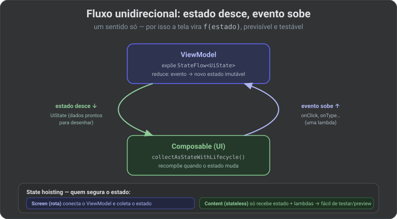
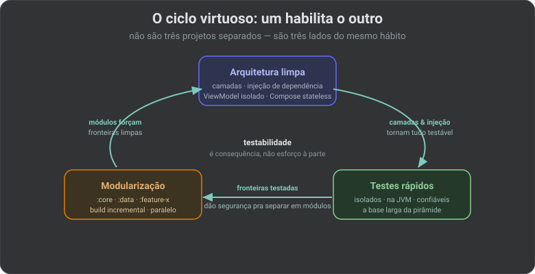

🏛️ Arquitetura & código limpo no Android: camadas que aguentam crescer (2026)
Existe uma pergunta que revela a saúde de um app: “consigo mudar isto sem medo?”. Se trocar a fonte de dados obriga a mexer na tela, se testar uma regra exige subir a UI inteira, se dois devs não conseguem tocar features diferentes sem colidir — o problema não é o código, é a arquitetura. Este artigo constrói, do básico ao avançado, a arquitetura que o próprio Google recomenda para Android — e o porquê de cada peça.
🔗 Fio condutor: este artigo desenha a estrutura; o próximo (13 · Padrões) desce ao nível dos tijolos — os padrões que preenchem cada camada (Repository, Factory, Observer…) — e o 14 · Testes mostra como tudo isso vira teste barato. Não é coincidência — arquitetura boa é a que se testa fácil.
Parte 1 · Por que separar em camadas
Um app tem três responsabilidades que mudam por motivos diferentes: mostrar coisas na tela, decidir regras de negócio, e buscar/guardar dados. Misturá-las num Activity/Composable gigante (o famoso “Deus-objeto”) faz cada mudança arriscar quebrar as outras duas. Separar em camadas isola o motivo da mudança.
![Arquitetura em camadas recomendada para Android. Camada de UI (apresentação): Composable stateless que recebe UiState e emite eventos, e ViewModel que expõe UiState imutável (MVI), a única fonte da verdade. Camada de domínio em Kotlin puro sem Android: UseCase (uma regra de negócio), Entidades (modelos do negócio) e Repository como interface (a porta que o data implementa). Camada de dados: Repository impl que orquestra as fontes, Room e Retrofit (local e remoto), DataStore e Mapper/DTO. Uma trilha lateral de DI com Hilt monta o grafo de objetos e injeta a interface, não a implementação — é o que troca o real pelo fake no teste. As setas de dependência da UI e do data apontam para o domínio, que não conhece ninguém.](../assets/arquitetura-camadas.svg)
| Camada | Responde por | Peças típicas (Android 2026) |
|---|---|---|
| UI (apresentação) | desenhar o estado e captar eventos | Compose, ViewModel, UiState, Navigation |
| Domínio | as regras do negócio, puras | UseCase, Entidades, interfaces de Repository |
| Dados | de onde vêm e para onde vão os dados | Repository (impl), Room, Retrofit, DataStore |
🧠 Termo — camada: um agrupamento de código com uma responsabilidade e uma fronteira clara. A regra é que uma camada só conversa com a vizinha por um contrato (interface), nunca fuçando o interior dela.
Parte 2 · A Regra da Dependência (o coração)
O desenho acima tem uma sutileza que é o tudo: as setas apontam para dentro. A UI depende do domínio; a camada de dados depende do domínio; o domínio não depende de ninguém. Ele não sabe que existe Android, Room ou Retrofit.
🧠 Termo — Regra da Dependência (Clean Architecture): o código de fora (frágil, muda toda hora: UI, banco, rede) pode depender do de dentro (estável: regras de negócio) — nunca o contrário. O estável não pode ser refém do volátil.
Como a camada de dados fica “embaixo” mas o domínio não pode depender dela? Com inversão de dependência: o domínio define a interface (AuthRepository) e a camada de dados a implementa (AuthRepositoryImpl). A seta de código aponta do data para o domínio, mesmo o dado “rodando por baixo”.
// domínio (Kotlin puro) — a PORTA
interface AuthRepository {
suspend fun login(email: String, senha: String): Result<Usuario>
}
// domínio — a REGRA, que só conhece a porta
class FazerLogin(private val repo: AuthRepository) {
suspend operator fun invoke(email: String, senha: String) =
repo.login(email, senha)
}
// data — a IMPLEMENTAÇÃO da porta (conhece Retrofit; o domínio não)
class AuthRepositoryImpl(private val api: AuthApi) : AuthRepository {
override suspend fun login(email: String, senha: String) = runCatching {
api.login(LoginDto(email, senha)).toUsuario() // mapper DTO → entidade
}
}
🔒 Visão Specialist: ponha o domínio num módulo Gradle Kotlin puro (
java-library, sem o plugin Android). Aí a Regra da Dependência deixa de ser disciplina e vira lei física: se alguém tentar importarandroid.content.Contextno domínio, o projeto não compila. A ferramenta passa a guardar a arquitetura por você.
Parte 3 · A camada de UI: MVVM, MVI e fluxo unidirecional
Na tela, o padrão moderno é o MVVM evoluído para MVI: a tela é uma função do estado. O ViewModel expõe um UiState imutável; o Composable o desenha; toda interação vira um evento que sobe. Um sentido só.
🔗 Aqui é o essencial; a comparação MVVM × MVI lado a lado (quando cada um vale a pena, o “estado impossível”, o canal de efeitos) está aprofundada no artigo 13 · Padrões de Projeto, junto com a linhagem MVC→MVP→MVVM→MVI.

🧠 Termo — UDF (Fluxo Unidirecional de Dados): o estado desce (do ViewModel para a UI) e os eventos sobem (da UI para o ViewModel). Nunca os dois sentidos no mesmo canal. Isso elimina a classe de bugs “quem alterou esse valor?”.
// UiState imutável descreve a tela INTEIRA num só objeto
data class LoginUiState(
val email: String = "",
val carregando: Boolean = false,
val erro: String? = null,
)
class LoginViewModel(private val fazerLogin: FazerLogin) : ViewModel() {
private val _state = MutableStateFlow(LoginUiState())
val state: StateFlow<LoginUiState> = _state.asStateFlow() // única fonte da verdade
fun aoEntrar(email: String, senha: String) = viewModelScope.launch {
_state.update { it.copy(carregando = true, erro = null) }
fazerLogin(email, senha)
.onSuccess { _state.update { it.copy(carregando = false) } }
.onFailure { e -> _state.update { it.copy(carregando = false, erro = e.message) } }
}
}
State hoisting: a UI stateless
Separe a rota (que conhece o ViewModel) do conteúdo (que só recebe estado e lambdas). O conteúdo stateless é o que fica trivial de testar e de pré-visualizar (@Preview).
// rota: conecta o ViewModel (stateful)
@Composable
fun LoginRoute(vm: LoginViewModel = hiltViewModel()) {
val state by vm.state.collectAsStateWithLifecycle()
LoginContent(state = state, onEntrar = vm::aoEntrar)
}
// conteúdo: sem ViewModel, só estado + eventos (stateless → testável/preview)
@Composable
fun LoginContent(state: LoginUiState, onEntrar: (String, String) -> Unit) { /* … */ }
⚠️ Pegadinha: use
collectAsStateWithLifecycle(), nãocollectAsState(). O primeiro para de coletar quando a tela vai para segundo plano — o segundo continua gastando recursos com a tela invisível.
Parte 4 · Domínio e dados: os padrões de apoio
| Padrão | O que é | Por que existe |
|---|---|---|
| UseCase (Interactor) | uma classe = uma ação de negócio (AplicarCupom) | tira regra de dentro do ViewModel; reutilizável e testável isolada |
| Repository | a fachada única para um tipo de dado | a UI não sabe se veio da rede ou do cache — só pede |
| Data source | uma fonte concreta (Room, Retrofit, DataStore) | o Repository escolhe/combina as fontes |
| Mapper / DTO | converte o formato externo (JSON) na entidade do domínio | o domínio nunca vê o formato da API — desacopla |
🧠 Termo — DTO vs Entidade: DTO (Data Transfer Object) é o formato cru da API/banco (o JSON). Entidade é o modelo limpo do seu domínio. O mapper traduz um no outro — assim, se a API mudar um campo, só o mapper muda, e o resto do app nem percebe.
🔒 Visão Specialist: o UseCase é opcional em telas triviais (o ViewModel pode chamar o Repository direto). Adote-o quando a regra se repete entre telas ou fica complexa demais para o ViewModel. Não crie um UseCase que só repassa a chamada — isso é cerimônia sem valor. Arquitetura é sobre onde a complexidade mora, não sobre encher o app de camadas.
Parte 5 · Injeção de dependência (Hilt)
Tudo acima depende de uma coisa: as classes recebem suas dependências por interface, em vez de criá-las por dentro. Quem monta esse quebra-cabeça é o container de DI. No Android moderno, é o Hilt.
@Module
@InstallIn(SingletonComponent::class)
abstract class DataModule {
// quando alguém pedir a INTERFACE, o Hilt entrega esta IMPLEMENTAÇÃO
@Binds
abstract fun bindAuthRepository(impl: AuthRepositoryImpl): AuthRepository
}
@HiltViewModel
class LoginViewModel @Inject constructor(
private val fazerLogin: FazerLogin // injetado — o VM não constrói nada
) : ViewModel()
🔒 Visão Specialist: o valor da DI aparece no teste (artigo 14): como o ViewModel recebe a interface, no teste você entrega um
FakeAuthRepositoryem vez do real — sem rede, sem Hilt, em milissegundos. Um ViewModel que fazRetrofit.create()por dentro é intestável. Teste difícil é sempre um sintoma de dependência mal invertida.
Parte 6 · Código limpo: o nível do dia a dia
Arquitetura organiza os grandes blocos; código limpo organiza cada função. Os dois se sustentam — de nada adianta a camada certa se o método dentro dela é ilegível. Começa pelo básico, que decide 80% da legibilidade:
| Princípio | Na prática Android |
|---|---|
| Nomes que revelam intenção | aplicarCupom(), não proc(); carregando, não flag |
| Funções pequenas, uma coisa só | um Composable que faz layout + rede + parsing precisa ser quebrado |
| Imutabilidade | val e data class por padrão; estado que só muda por copy() |
| Sem estado escondido | nada de variável global mutável; o estado mora no ViewModel |
| Comentário só quando o código não conta | explique o porquê (a regra de negócio), não o o quê — esse o código já diz |
SOLID, sem decoreba
SOLID são cinco princípios de orientação a objetos que, no Android, você já pratica sem saber os nomes — a arquitetura das Partes 1 a 5 é SOLID aplicado. Vale conhecer para nomear a dor quando algo cheira mal.
![Os cinco princípios SOLID traduzidos para o Android. S (Single Responsibility): uma classe, um motivo para mudar — o ViewModel só orquestra estado e a regra vai para o UseCase. O (Open/Closed): aberto a estender, fechado a alterar — um novo caso vira uma nova estratégia ou lambda sem tocar no código existente. L (Liskov Substitution): o subtipo substitui o tipo sem surpresa — o FakeRepository troca o real no teste e nada quebra. I (Interface Segregation): interfaces pequenas em vez de uma gigante — um Repository focado por dado, não uma God interface. D (Dependency Inversion): depender da abstração, nunca do concreto — o ViewModel recebe a interface e o Hilt injeta a implementação. Nota final: o S e o D pagam quase toda a conta no Android; os outros três caem de graça quando esses dois estão certos.](../assets/solid-android.svg)
🔒 Visão Specialist: não persiga os cinco por checklist. No Android, S (uma responsabilidade) e D (inversão via interface + Hilt) resolvem quase tudo — quando esses dois estão certos, L (fakes substituíveis) e I (interfaces enxutas) vêm de brinde, e O aparece naturalmente com
sealed+ lambdas. Decorar as siglas não torna ninguém sênior; reconhecer qual foi violado quando o teste ficou difícil, sim.
Code smells: os cheiros que denunciam o problema
Um smell não é um bug — é um sinal de que a estrutura vai doer. Reconhecê-los cedo é o que separa manutenção barata de dívida cara.
| Cheiro | Como aparece no Android | Refatoração |
|---|---|---|
| God object / Composable | um Composable ou ViewModel de 400 linhas que faz tudo | extrair UseCases e componentes stateless menores |
| Long method | uma função com 5 níveis de if aninhado | early return, extrair função, when sobre sealed |
| Primitive obsession | String para e-mail, CPF, id — tudo texto solto | value class Email(val v: String) — o tipo vira a validação |
| Feature envy | o ViewModel manipula os campos internos de outra classe | mover o comportamento para dentro de quem tem os dados |
| Shotgun surgery | um campo novo na API obriga a mexer em 8 arquivos | centralizar no mapper/Repository — mudança em um lugar só |
Funções e tratamento de erro
Função limpa faz uma coisa, num só nível de abstração, com poucos argumentos. E erro em Kotlin não precisa virar try/catch espalhado: modele a falha como valor (Result ou uma sealed de erros), e o compilador obriga quem chama a tratá-la.
// ❌ Long method: mistura níveis (rede, parsing, regra, UI) numa função só
suspend fun entrar(email: String, senha: String) {
if (email.isNotBlank()) {
if (senha.length >= 8) {
val r = api.login(LoginDto(email, senha)) // rede
if (r.isSuccessful) { /* parse + regra + estado, tudo aqui… */ }
}
}
}
// ✅ Um nível por função + erro como valor (sealed), sem try/catch solto
sealed interface LoginErro { data object Credenciais : LoginErro; data object Rede : LoginErro }
class FazerLogin(private val repo: AuthRepository) {
suspend operator fun invoke(cred: Credenciais): Result<Usuario, LoginErro> =
repo.login(cred) // a regra é uma linha; validação e rede moram fora
}
// quem chama é OBRIGADO a tratar os dois lados — nada de exceção esquecida
⚠️ Pegadinha: “código limpo” não é encher de abstração. Uma interface com uma implementação que nunca terá outra, um UseCase que só repassa, cinco módulos para um app de duas telas — isso é over-engineering. Limpo é o mínimo que deixa mudar sem medo, não o máximo de camadas. Todo princípio desta parte serve a isso; nenhum é um fim em si.
Parte 7 · Modularização: onde tudo se paga
Quando as camadas já são limpas, separá-las em módulos Gradle deixa de ser risco e vira ganho: build incremental (só o módulo que mudou recompila — artigo 01), fronteiras que o compilador obriga a respeitar, e times em paralelo.
nexushub/
├── app/ # amarra tudo (o grafo do Hilt, a navegação)
├── core/
│ ├── :core-ui # tema, componentes de design compartilhados
│ └── :core-testing # fakes e utilitários de teste reusáveis
├── :domain # KOTLIN PURO — sem Android (a lei da dependência)
├── :data # Room, Retrofit, implementações de Repository
└── feature/
├── :feature-login
└── :feature-carrinho # cada feature isolada, testável, dona do seu ViewModel

- Arquitetura → testes: camadas e injeção permitem testar cada peça isolada (artigo 14).
- Testes → modularização: fronteiras cobertas dão segurança para partir o app sem medo.
- Modularização → arquitetura: o módulo
:domainpuro força a Regra da Dependência a valer de verdade.
🔒 Visão Specialist: comece o NexusHub com um módulo por feature +
:core+:domainpuro. Módulos por feature (não por camada técnica) escalam melhor: cada time é dono de uma feature de ponta a ponta. Adote a modularização quando o build começar a doer ou o time crescer — cedo demais, é burocracia; tarde demais, é um novelo para desembaraçar.
✅ Checklist para o NexusHub
| Item | Ação |
|---|---|
| Três camadas | UI / domínio / dados com fronteiras por interface |
| Regra da Dependência | Domínio em módulo Kotlin puro — o Gradle garante a direção |
| MVI / UDF | UiState imutável; estado desce, evento sobe; StateFlow |
| State hoisting | Rota conecta o ViewModel; conteúdo stateless recebe estado + lambdas |
| Repository + Mapper | Fachada única por dado; DTO nunca vaza para o domínio |
| Hilt | Injetar interfaces por construtor; nada de new/create() interno |
| Código limpo | nomes que revelam intenção; funções de um nível; erro como valor (Result/sealed) |
| Sem over-engineering | UseCase só quando agrega; a mínima camada que deixa mudar sem medo |
| Modularização | Por feature + core + domínio; adotar quando o build/time pedir |
📖 Glossário-relâmpago
| Termo | Em uma linha |
|---|---|
| camada | Bloco com uma responsabilidade e fronteira por contrato. |
| Clean Architecture | UI/domínio/dados com dependência apontando para dentro. |
| SOLID | 5 princípios OO; no Android, S e D pagam a conta. |
| code smell | sinal de estrutura ruim (God object, long method…), não um bug. |
| value class | embrulho de tipo único que mata primitive obsession sem custo. |
| Regra da Dependência | O de fora depende do de dentro, nunca o contrário. |
| inversão de dependência | O domínio define a interface; o dado a implementa. |
| MVVM / MVI | Tela = f(estado); ViewModel expõe UiState imutável. |
| UDF | Estado desce, evento sobe — um sentido só. |
| state hoisting | Tirar o estado do Composable e injetá-lo de fora. |
| UseCase | Uma classe = uma ação de negócio, testável isolada. |
| Repository | Fachada única para um tipo de dado. |
| DTO / Mapper | Formato cru da API ↔ entidade limpa do domínio. |
| DI / Hilt | Container que injeta as interfaces por construtor. |
| modularização | Partir o app em módulos Gradle com fronteiras reais. |